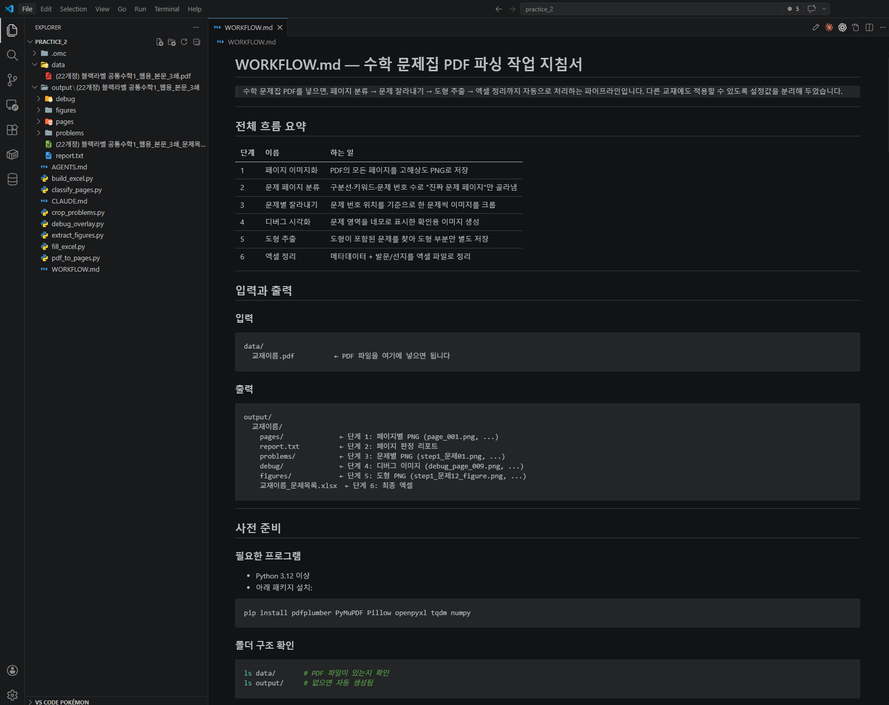
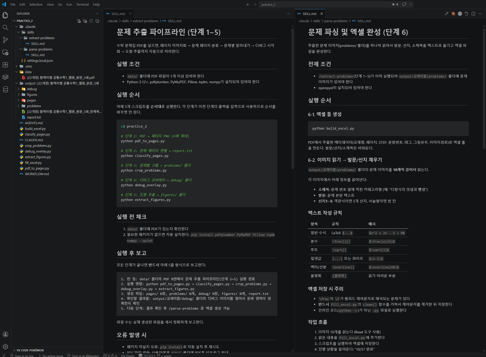

Stage 4. Skill화¶
← 이전: Stage 3. 사람 확인 및 엑셀 정리 | 다음 → 부록. 피드백 방법과 에러 대처
지금까지의 대화와 절차를 하나의 재사용 가능한 작업 지침서로 묶는 단계입니다.
실습 1에서 Skill의 개념과 WORKFLOW.md를 체험했습니다. 이제 실제로 쓸 수 있는 Skill을 만들고, 다른 교재 PDF에 적용해서 범용성을 확인합니다.
스킬(Skill)이란?
AI에게 특정 태스크를 수행하는 방법을 가르치는 구조화된 지식 문서입니다. 사람으로 치면 "이 일은 이런 순서로 하고, 이런 점을 조심하고, 이런 도구를 써라"라고 적어둔 매뉴얼과 같습니다.
- 기본적으로
.md(마크다운) 문서 형태로 작성되며, 설명과 사용 조건, 작업 절차가 담겨 있습니다.name,description을 바탕으로 AI가 어떤 스킬을 언제 사용할지 결정합니다.- 또는 사용자가 직접 사용을 요구할 수도 있습니다.
- AI는 상황에 맞는 스킬을 읽고 그 지침에 따라 작업합니다.
- 사용하고 있는 코딩 에이전트에 따라 스킬을 어디에 두고, 어떻게 연결하는지 조금씩 다를 수 있습니다.
Skill 저장 위치:
| A. 이 프로젝트에서만 사용 | B. 전체 프로젝트에서 사용 | |
|---|---|---|
| 클로드 코드 | {폴더명}/.claude/skills/ |
~/.claude/skills/ |
| 코덱스 | {폴더명}/.agents/skills/ |
~/.codex/ |
| 안티그래비티 | {폴더명}/.agent/skills/ |
~/.gemini/antigravity/skills/ |
"프로젝트"는 결국 작업 중인 폴더를 의미합니다. 만일 이 폴더 뿐 아니라 다른 폴더에서 작업 중인 프로젝트에서도 동일한 스킬을 사용하고 싶다면, B 위치에 Skill 폴더를 넣어두어야 합니다.
Skill 없이 vs Skill 있으면:
- Skill 없이: 매번 "PDF 열어줘, 표 찾아줘, 추출해줘, 검증해줘"를 처음부터 다시 설명
- Skill 있으면: "이 PDF를 모집요강 파싱 Skill로 처리해줘" 한 마디로 시작 가능
4-1. 작업 과정 문서화¶
AI에게 이렇게 말해보세요 — 작업 과정 문서화
지금까지 우리가 한 단계 1~6의 과정을 **재사용 가능한 작업 지침서로 정리해줘.**
프로젝트 루트에 `WORKFLOW.md` 파일을 만들고, 아래 내용을 포함해줘:
1. **전체 흐름 요약**: 단계 1~6이 각각 뭘 하는지 한 줄씩
2. **단계별 상세 지침**: 각 단계에서 실행해야 할 명령, 사용하는 파일, 생성되는 결과물
3. **입력과 출력**: `data/` 폴더에 PDF를 넣으면 → `output/` 폴더에 뭐가 나오는지
4. **설정 가능한 것들**: DPI, 키워드 목록, 도형 판별 기준 같이 교재마다 바꿀 수 있는 값
5. **문제 해결 가이드**: 자주 발생하는 문제와 해결법 (예: "문제 번호가 안 잡힐 때는 폰트 크기 기준을 낮춰봐")
이 문서는 **다른 사람이 처음 보고도 따라할 수 있을 정도**로 써줘.
단, 코드 설명은 최소화하고, **"어떤 명령을 치면 뭐가 나온다"** 위주로 써줘.

4-2. Skill로 변환하기¶
AI에게 이렇게 말해보세요 — Skill 생성
/skill-creator 방금 만든 WORKFLOW.md를 기반으로 이 도구의 재사용 가능한 Skill(명령어)을 2개 만들어줘.
Skill 1: /문제추출 (또는 /extract-problems)
data/ 폴더의 PDF를 자동으로 찾아서 단계 1~5를 한 번에 실행
페이지 렌더링 → 문제 페이지 판별 → 문제 잘라내기 → 디버그 이미지 → 도형 추출
끝나면 5줄 보고 형식으로 결과 알려주기
Skill 2: /문제파싱 (또는 /parse-problems)
잘라낸 문제 이미지들을 텍스트로 변환해서 엑셀을 완성 (단계 6)
추출과 파싱을 나눈 이유: 추출은 한 번만 하면 되는데, 파싱은 결과 보고 다시 돌릴 수 있으니까
Skill 파일은 이 도구의 표준 위치와 형식에 맞춰서 저장해줘. 잘 모르겠으면 이 도구의 Skill 만드는 내장 기능을 사용해줘.
@Skill Creator 방금 만든 WORKFLOW.md를 기반으로 이 도구의 재사용 가능한 Skill(명령어)을 2개 만들어줘.
Skill 1: /문제추출 (또는 /extract-problems)
data/ 폴더의 PDF를 자동으로 찾아서 단계 1~5를 한 번에 실행
페이지 렌더링 → 문제 페이지 판별 → 문제 잘라내기 → 디버그 이미지 → 도형 추출
끝나면 5줄 보고 형식으로 결과 알려주기
Skill 2: /문제파싱 (또는 /parse-problems)
잘라낸 문제 이미지들을 텍스트로 변환해서 엑셀을 완성 (단계 6)
추출과 파싱을 나눈 이유: 추출은 한 번만 하면 되는데, 파싱은 결과 보고 다시 돌릴 수 있으니까
Skill 파일은 이 도구의 표준 위치와 형식에 맞춰서 저장해줘. 잘 모르겠으면 이 도구의 Skill 만드는 내장 기능을 사용해줘.
@skill-creator 방금 만든 WORKFLOW.md를 기반으로 이 도구의 재사용 가능한 Skill(명령어)을 2개 만들어줘.
Skill 1: /문제추출 (또는 /extract-problems)
data/ 폴더의 PDF를 자동으로 찾아서 단계 1~5를 한 번에 실행
페이지 렌더링 → 문제 페이지 판별 → 문제 잘라내기 → 디버그 이미지 → 도형 추출
끝나면 5줄 보고 형식으로 결과 알려주기
Skill 2: /문제파싱 (또는 /parse-problems)
잘라낸 문제 이미지들을 텍스트로 변환해서 엑셀을 완성 (단계 6)
추출과 파싱을 나눈 이유: 추출은 한 번만 하면 되는데, 파싱은 결과 보고 다시 돌릴 수 있으니까
Skill 파일은 이 도구의 표준 위치와 형식에 맞춰서 저장해줘. 잘 모르겠으면 이 도구의 Skill 만드는 내장 기능을 사용해줘.

4-3. 다시 써볼 수 있어야 진짜 완성¶
판단 팁
- 지금 PDF 하나에서만 잘 되면 아직 Skill이 아닙니다.
- 다른 교재 PDF에서 어디가 깨지는지 봐야 진짜 범용성이 드러납니다.
- 실제 업무에서는 안 되는 부분이 나오면 Skill 수정 → 다시 테스트를 반복하세요.
왜 Skill화가 중요한가요?
자동화는 한 번 잘 되는 것보다, 다음에도 더 빨리 다시 할 수 있게 만드는 것이 중요합니다. Skill은 사람의 경험과 AI 협업 방식을 함께 저장하는 가장 실용적인 포장 방식입니다.
체크포인트¶
- 프로젝트 루트에
WORKFLOW.md가 있고, 다른 사람이 읽어도 이해할 수 있습니다 - Skill 파일이 도구에 맞는 위치에 저장돼 있습니다
실습 완료!
이 단계까지 끝났으면 실습 완료입니다! 하단의 부록을 참고해서 실습 중 막히는 순간에 활용하세요.
← 이전: Stage 3. 사람 확인 및 엑셀 정리 | 다음 → 부록. 피드백 방법과 에러 대처